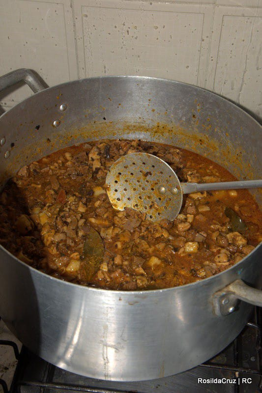

- Sarapatel
- Clientes
De sabor forte e marcante, o sarapatel tem a cara do Piauí. No início da colonização, os portugueses trouxeram esse ensopado de vísceras para o estado e os nordestinos se encarregaram de popularizar a comida. Na Bahia o sarapatel com vísceras também é feito com muito sangue.
